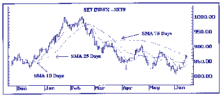
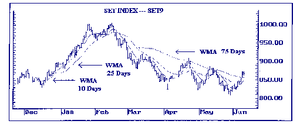
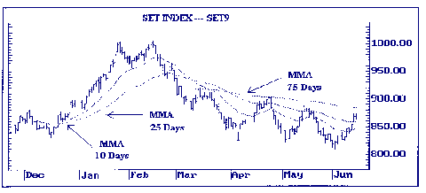
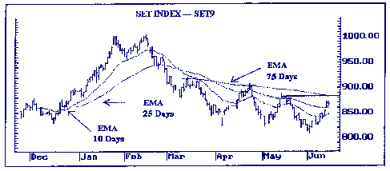
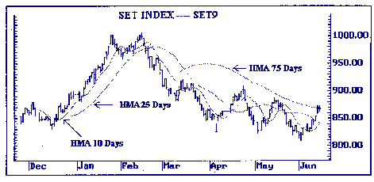

| << | 6 | >> |
รูปแบบของเส้นค่าเฉลี่ยเคลื่อนที่แบบต่าง ๆ
SIMPLE MOVING AVERAGE (SMA)
เส้นค่าเฉลี่ยเคลื่อนที่อย่างง่าย หรือค่าเฉลี่ยเลขคณิต
(ARITHMETIC MEAN) นี้ เป็นวิธีที่นักวิเคราะห์ใช้กันแพร่หลายมากที่สุด ในการหาเส้นค่าเฉลี่ยเคลื่อนที่
วิธีนี้จะถ่วงน้ำหนักให้ค่าทุกค่าที่นำมาคำนวณมีความสำคัญ (อิทธิพล) ต่อราคาเท่ากันหมด
โดยอาศัยหลักการเอาข้อมูลในช่วงเวลาหนึ่งมาหาค่าเฉลี่ยกัน เช่น การหาเส้นค่าเฉลี่ยเคลื่อนที่ของราคาในช่วงเวลา
10 วัน จะคำนวณโดยรวมราคาหุ้น ณ วันปัจจุบัน (Pt) กับราคาหุ้นของอีก 9 วันก่อนหน้า
(Pt-1 ถึง Pt-9) แล้วหารด้วย 10 หลังจากนั้นนำมาจุดบนแผนภูมิแท่ง (BAR CHART) หรือแผนภูมิเส้น
(LINE CHART) ให้ตรงกับราคาหุ้นครั้งสุดท้ายแล้วลากเส้นต่อกัน
วิธีการคำนวณ
SMAt = (Pt + Pt - 1 + P1-2 +
+ Pt-n+1) /n
โดยที่ :
SMAt คือ ค่าเฉลี่ยเคลื่อนที่ ณ คาบเวลา (วัน) ปัจจุบัน
n คือ จำนวนวัน
Pt คือ ราคาที่เลือกใช้ในการคำนวณ (เช่น ราคาปิดหรือราคาเฉลี่ยฯ) ณ วันปัจจุบัน
Pt-k คือ ราคาที่เลือกใช้ในการคำนวณย้อนหลังไป k คาบเวลา
 |
 |
 |
รูปแสดงเส้นค่าเฉลี่ยฯ ชนิด MMA 10, 25 และ 75 วัน
EXPONENTIAL MOVING AVERAGE (EMA)
วิธีนี้เป็นอีกรูปแบบหนึ่งของการหาค่าเฉลี่ยถ่วงน้ำหนัก โดยการให้ความสำคัญกับค่าตัวหนึ่งที่มีผลต่อการเปลี่ยนแปลงของราคา
และถ่วงน้ำหนักให้ค่าสุดท้ายมีความสำคัญเพิ่มขึ้น วิธีนี้ไม่ได้ให้ความสำคัญของเวลาในการวิเคราะห์
ราคาทุกราคาจะมีผลต่อค่าของ EMA แม้ว่าราคาล่าสุดจะมีความสำคัญมากที่สุดก็ตาม ซึ่งวิธีนี้เป็นการพยายามแก้ไขข้อบกพร่องที่เกิดขึ้นจากวิธี
SMA กล่าวคือ EMA นั้น จะถ่วงน้ำหนักโดยให้ความสำคัญกับวันสุดท้ายมากที่สุด และจะเอาค่าทุก
ๆ ค่ามาหาค่าเฉลี่ย โดยจะไม่ทิ้งข้อมูลเก่าที่ผ่านมา ซึ่งจะทำให้ค่าทุกค่าสะท้อนให้เห็นการเปลี่ยนแปลงของราคา
ขณะที่ค่าเฉลี่ยเคลื่อนที่ตัวอื่น ๆ ให้ความสำคัญต่อคาบเวลา แต่ EMA จะให้ความสำคัญกับค่าตัวหนึ่งที่เรียกว่า
SMOOTHING FACTOR (SF) หรือ SMOOTHING CONSTANT โดยที่ SF = 2/(n+1) ซึ่งวิธีการสร้าง
EMA
มีสูตรการคำนวณคือ
EMA = EMAt-1 + SF(Pt - EMAt-1)
เมื่อ EMAt คือ ค่าของ Exponential Moving Average
ณ เวลาปัจจุบัน
EMAt-1 คือ ค่าของ Exponential Moving Average ณ คาบเวลาก่อนหน้า
SF คือ ค่าของ Smoothing Factor = 2/(n+1)
Pt คือ ราคาปัจจุบัน
n คือ จำนวนวัน
หมายเหตุ : การคำนวณค่าเฉลี่ยของวันแรก จะใช้ราคาในวันแรกนั้นเป็น
EMA
 |
 |
รูปแสดงเส้นค่าเฉลี่ยฯ ชนิด HMA 10, 25 และ 75 วัน
| << | 6 | >> |